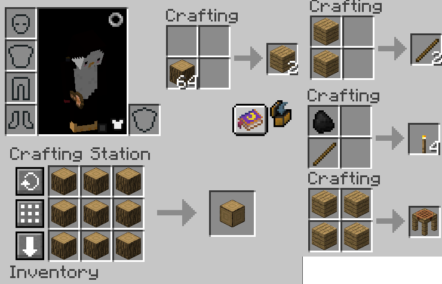
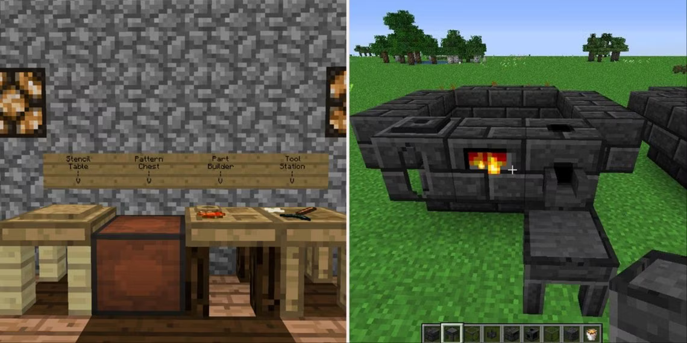
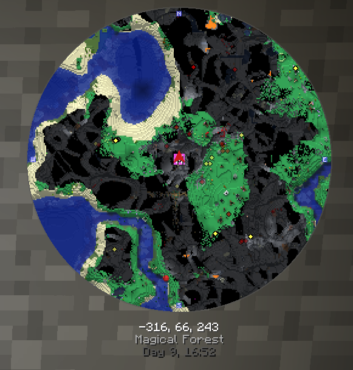

Minecraft Basics: A Simple Guide for Beginners
Starting Out
1. Gathering Resources
- Wood: Punch trees to gather wood logs. Craft them into a Tool Station and Part Builder to build basic tools.
- Stone: Use a pickaxe to mine stone. This lets you make stone tools and furnaces.
- Coal: Mine coal for torches and furnace fuel.
- Food: Kill animals for meat or gather crops like wheat to make bread. Cook meat in a furnace for better food.
2. Crafting and building a Shelter
Before night, build a simple shelter from wood or stone. Ensure it's sealed to prevent mobs from entering. Use torches to light it up.
- Crafting - Crafting works just like in Stardew valley, except you can only make small items in your inventory, otherwise you need to use a Crafting Station. Below is an example showing the difference between crafting in your inventory or using a Crafting Station, as well as how to craft wooden planks, sticks, torches, and a Crafting Station 
- Tinker's construct is needed to make tools in E2E. Below are workbenches you need as well as an example of the smeltery. 
3. Craft a Bed
Craft a bed from wool and wooden planks. This lets you skip the night and set your spawn point.
Food and Health

Food Basics
Hunger and Health: Your hunger bar represents your character’s need for food. Keeping it full ensures health regeneration.
Saturation and Restoring Hunger
Saturation: High-saturation foods like steak or pork chops keep you full longer. Low-saturation foods like bread require frequent eating.

Health Regeneration
Your health regenerates when your hunger bar is at least half full.
Cooking Food
Cooking: Cook raw foods like meat in a furnace to improve their hunger restoration.
Tools and Progression
Tinkers' Construct Tools
- Create a Tool Station and Part Builder to craft tools.
- Build a smeltery to make metal tools. Craft grout from sand, clay, and gravel.
Exploring and Mining
Exploring
- Find resources like coal, iron, and wood.
- Search caves for valuable resources like iron ore and diamonds.
- Light level - Enemies can only spawn in places where it is dark. Torches and other things that produce light stop this. Press F7 to see the surronding light levels. Yellow means naturally lit, so mobs can only spawn and night. Red means the area has no access to the sun, so mobs can spawn anytime.

Mining Tips
- Bring enough supplies like torches and food.
- Mine at lower levels (around Y=11) for rare ores.
- Minecraft locations are based on coordinates with Y-values effecting what sort of ore you can mine, just like how you find more rare ores in Stardew, in the picture below you can see your coordinates below the minimap. -316, 66, 243 these are your X, Y, and Z coordinates. 
Storage
Chests
- Craft chests from wood, wooden planks, and a stone button for item storage.
- Place two chests next to each other to create a double chest. Double chests require a 1 block gap between them.
- Upgrade chests with Chest Upgrades for advanced storage options in modpacks. Or build advance sorting systems for more advanced options.
Goals and Progression
Early Goals
Gather resources to build a shelter, and create food sources. Gather a supply of copper, aluminum, sand, gravel, and clay in order to create better tools.
First 10 hours
Build a temporary home to use for the early-mid game. Build a smeltery to upgrade your Tinkers' tools, start exploring, and go mining.
Mid Game
Explore diffrent mods through the quest system and find what you like to do. Eventually progress through the quest system to reach the endgame content. Craft advanced tools for exploration, mining, and combat and take time to automate the crafting of items in the future.